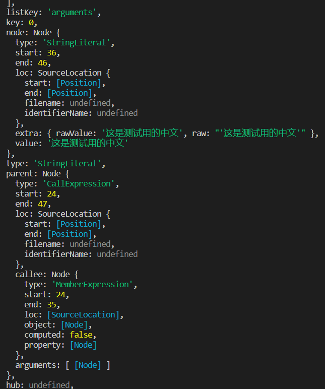

抽象语法树
抽象语法树（Abstract Syntax Tree，AST），或简称语法树（Syntax tree），是源代码语法结构的一种抽象表示。它以树状的形式表现编程语言的语法结构，树上的每个节点都表示源代码中的一种结构。
babel 的处理过程每一步都涉及抽象语法树。
AST Explorer是一个在线转化 ast 的网站，可以查看源码及转化后的 AST 代码。

以 type 划分每一层级，这样的每一层结构也被叫做 节点（Node）。 一个 AST 可以由单一的节点或是成百上千个节点构成。 它们组合在一起可以描述用于静态分析的程序语法。
每一个节点都有 start、end、loc 这三个属性用以确定节点在源代码中的位置
babel 的处理步骤
babel 的主要处理分为三个步骤：解析（parse），转换（transform），生成（generate）
解析
babel 的解析是将源码转化输出为 ast 的过程，解析分为两步：词法分析和语法分析
- 词法分析：词法分析阶段把字符串形式的代码转换为 令牌（tokens） 流。
- 语法分析：语法分析阶段会把一个令牌流转换成 AST 的形式。 这个阶段会使用令牌中的信息把它们转换成一个 AST 的结构，这样更易于后续的操作。
转换
转换步骤接收 AST 并对其进行遍历，在此过程中对节点进行添加、更新及移除等操作。 这是 Babel 或是其他编译器中最复杂的过程 同时也是插件将要介入工作的部分，后续将做详细介绍。
生成
代码生成步骤把最终（经过一系列转换之后）的 AST 转换成字符串形式的代码，同时还会创建源码映射（source maps）。.
代码生成其实很简单：深度优先遍历整个 AST，然后构建可以表示转换后代码的字符串。
State(状态)
通过将一个访问者放入另一个访问者中以达到从访问者中消除全局状态的目的。
1 | const updateParamNameVisitor = { |
Scopes(作用域)
当编写一个转换时，必须小心作用域。得确保在改变代码的各个部分时不会破坏已经存在的代码。
在添加一个新的引用时需要确保新增加的引用名字和已有的所有引用不冲突。 或者我们仅仅想找出使用一个变量的所有引用， 我们只想在给定的作用域（Scope）中找出这些引用。
当你创建一个新的作用域时，需要给出它的路径和父作用域，之后在遍历过程中它会在该作用域内收集所有的引用(“绑定”)。
一旦引用收集完毕，你就可以在作用域（Scopes）上使用各种方法
Bindings（绑定）
所有引用属于特定的作用域，引用和作用域的这种关系被称作：绑定（binding）。
通过绑定的信息可以查找一个绑定的所有引用，并且知道这是什么类型的绑定(参数，定义等等)，查找它所属的作用域，或者拷贝它的标识符。 你甚至可以知道它是不是常量，如果不是，那么是哪个路径修改了它。
在很多情况下，知道一个绑定是否是常量非常有用，最有用的一种情形就是代码压缩时。
API
Babylon
Babylon has been moved into the main Babel mono-repo as @babel/parser.
Babylon 是 Babel 的解析器。最初是 从 Acorn 项目 fork 出来的。Acorn 非常快，易于使用，并且针对非标准特性(以及那些未来的标准特性) 设计了一个基于插件的架构。
具体内容可查看后续章节。
babel-traverse
Babel Traverse（遍历）模块维护了整棵树的状态，并且负责替换、移除和添加节点。
traverse 可以和 parser 一起使用，用于遍历和更新节点
1 | import * as babylon from 'babylon'; |
具体内容可查看后续章节。
babel-types
Babel Types 模块是一个用于 AST 节点的 Lodash 式工具库， 它包含了构造、验证以及变换 AST 节点的方法。 该工具库包含考虑周到的工具方法，对编写处理 AST 逻辑非常有用。
1 | import traverse from 'babel-traverse'; |
Definitions（定义）
Babel Types 模块拥有每一个单一类型节点的定义，包括节点包含哪些属性，什么是合法值，如何构建节点、遍历节点，以及节点的别名等信息。
单一节点类型的定义形式如下：
1 | defineType('BinaryExpression', { |
Builders（构建器）
你会注意到上面的 BinaryExpression 定义有一个 builder 字段。
builder: [“operator”, “left”, “right”]
这是由于每一个节点类型都有构造器方法 builder，按类似下面的方式使用：
1 | t.binaryExpression('*', t.identifier('a'), t.identifier('b')); |
Validators（验证器）
BinaryExpression 的定义还包含了节点的字段 fields 信息，以及如何验证这些字段。
可以创建两种验证方法。第一种是 isX。
1 | t.isBinaryExpression(maybeBinaryExpressionNode); |
Converters（变换器）
babel-generator
Babel Generator 模块是 Babel 的代码生成器，它读取 AST 并将其转换为代码和源码映射（sourcemaps）。
babel-template
babel-template 是另一个虽然很小但却非常有用的模块。 它能让你编写字符串形式且带有占位符的代码来代替手动编码， 尤其是生成的大规模 AST 的时候。 在计算机科学中，这种能力被称为准引用（quasiquotes）。
找到特定的父路径
有时你需要从一个路径向上遍历语法树，直到满足相应的条件。
1 | // 对于每一个父路径调用callback并将其NodePath当作参数，当callback返回真值时，则将其NodePath返回。. |
获取同级路径
如果一个路径是在一个 Function／Program 中的列表里面，它就有同级节点。
- 使用 path.inList 来判断路径是否有同级节点，
- 使用 path.getSibling(index)来获得同级路径,
- 使用 path.key 获取路径所在容器的索引,
- 使用 path.container 获取路径的容器（包含所有同级节点的数组）
- 使用 path.listKey 获取容器的 key
停止遍历
如果你的插件需要在某种情况下不运行，最简单的做法是尽早写回。
1 | BinaryExpression(path) { |
如果您在顶级路径中进行子遍历，则可以使用 2 个提供的 API 方法：
- path.skip() 跳过遍历当前路径的子路径。
- path.stop() 完全停止遍历。
处理
1 | // 替换一个节点 |
Scope（作用域）
1 | // 检查本地变量是否被绑定 |
插件选项
1 | // 如果您想让您的用户自定义您的Babel插件的行为您可以接受用户可以指定的插件特定选项，如下所示： |
插件的准备和收尾工作
1 | // 插件可以具有在插件之前或之后运行的函数。它们可以用于设置或清理/分析目的。 |
在插件中启用其他语法
1 | // 插件可以启用babel plugins，以便用户不需要安装/启用它们。 这可以防止解析错误，而不会继承语法插件。 |
抛出一个语法错误
1 | // 如果您想用babel-code-frame和一个消息抛出一个错误： |
构建节点
编写转换时，通常需要构建一些要插入的节点进入AST。 如前所述，您可以使用babel-types包中的builder方法。
构建器的方法名称就是您想要的节点类型的名称，除了第一个字母小写。 例如，如果您想建立一个 MemberExpression 您可以使用 t.memberExpression（…）
1 | // 请注意，有时在节点上可以定制的属性比``构建器</>数组包含的属性更多。 这是为了防止生成器有太多的参数。 在这些情况下，您需要手动设置属性。 |
最佳实践
将一些公共或者特定的检查提取出来
1 | function isAssignment(node) { |
尽量避免遍历抽象语法树（AST）
- 及时合并访问者对象
1
2
3
4
5
6
7
8
9
10
11
12// 可以将以下访问器合并
path.traverse({
Identifier(path) {
// ...
}
});
path.traverse({
BinaryExpression(path) {
// ...
}
}); - 可以手动查找就不要遍历
1
2
3
4
5
6
7
8
9
10
11
12
13
14
15
16
17
18
19
20// 使用path.traverse查找特定类型的节点
const nestedVisitor = {
Identifier(path) {
// ...
}
};
const MyVisitor = {
FunctionDeclaration(path) {
path.get('params').traverse(nestedVisitor);
}
};
// 查找特定节点时，可以尝试使用手动处理的方式，无需执行代价高昂的traverse遍历
const MyVisitor = {
FunctionDeclaration(path) {
path.node.params.forEach(function() {
// ...
});
}
}; - 优化嵌套的访问者对象
1
2
3
4
5
6
7
8
9
10
11
12
13
14
15
16
17
18
19
20
21
22
23
24
25
26
27
28
29
30
31
32
33
34
35
36
37
38
39
40
41
42
43
44
45
46
47
48
49
50const MyVisitor = {
FunctionDeclaration(path) {
path.traverse({
Identifier(path) {
// ...
}
});
}
};
// 将上面的例子改成下面这样，原因：
// 每当调用FunctionDeclaration()时都会创建一个新的访问者对象。代价可能有点大，因为每次一个新的访问者对象传入babel，babel都会做一些处理。
// babel会将已经处理过的标志保存在访问者对象上，因此最好还是将访问者保存在一个变量里，每次传递相同的对象。
const nestedVisitor = {
Identifier(path) {
// ...
}
};
const MyVisitor = {
FunctionDeclaration(path) {
path.traverse(nestedVisitor);
}
};
// 在嵌套的访问者中需要一些状态
const MyVisitor = {
FunctionDeclaration(path) {
var exampleState = path.node.params[0].name;
path.traverse({
Identifier(path) {
if (path.node.name === exampleState) {
// ...
}
}
});
}
};
// 可以将它作为状态传递给traverse()方法，并有权在访问者中通过this拿到状态
const nestedVisitor = {
Identifier(path) {
if (path.node.name === this.exampleState) {
// ...
}
}
};
const MyVisitor = {
FunctionDeclaration(path) {
var exampleState = path.node.params[0].name;
path.traverse(nestedVisitor, { exampleState });
}
};
留意嵌套结构
单元测试
有几种主要的方法来测试babel插件：快照测试，AST测试和执行测试
可以使用插件：babel-plugin-tester
1 | import pluginTester from 'babel-plugin-tester'; |
疑问点：
1、使用@babel/traverse 报错：TypeError: traverse is not a function
https://github.com/babel/babel/issues/13855
2、什么情况下需要同时使用 stopPropagation 和 preventDefault？
3、typescript 的 tsconfig 中 esModuleInterop 的到底做了什么？（https://blog.csdn.net/zdhsoft/article/details/123785137）
4、默认导出与具名导出
5、ESM 与 CJS 的 Interop 的来世今生（https://zhuanlan.zhihu.com/p/446113714）
6、启发式算法